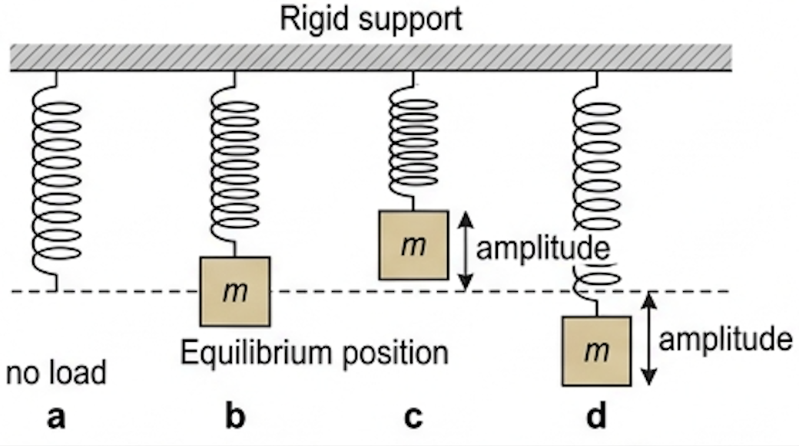
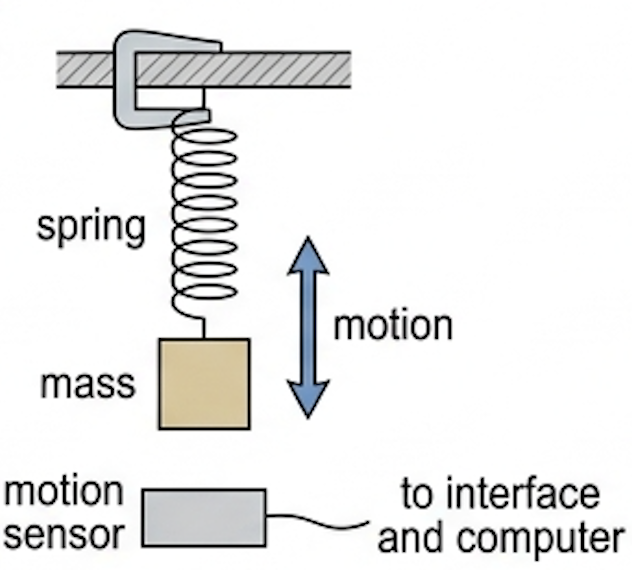
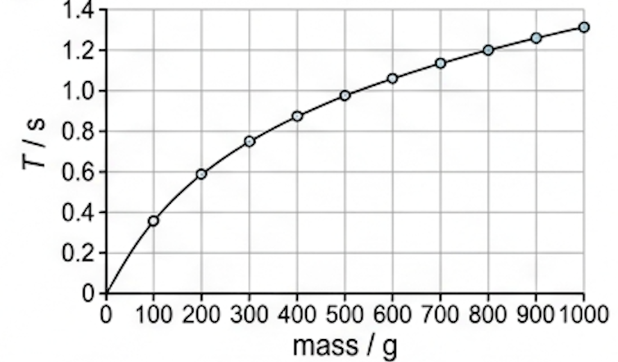
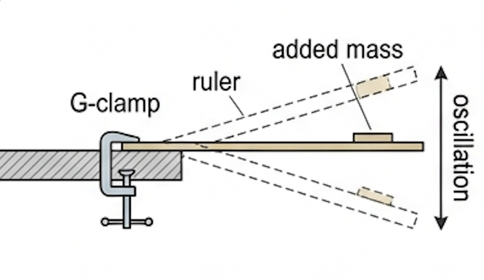
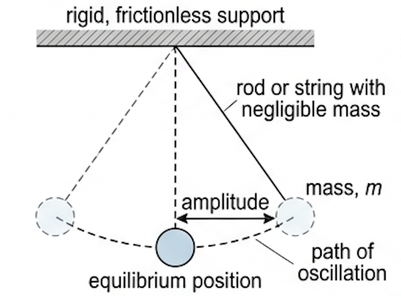
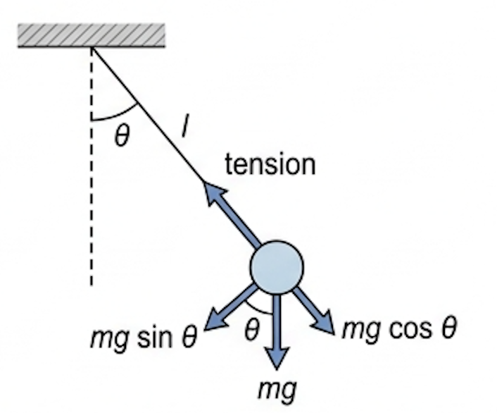
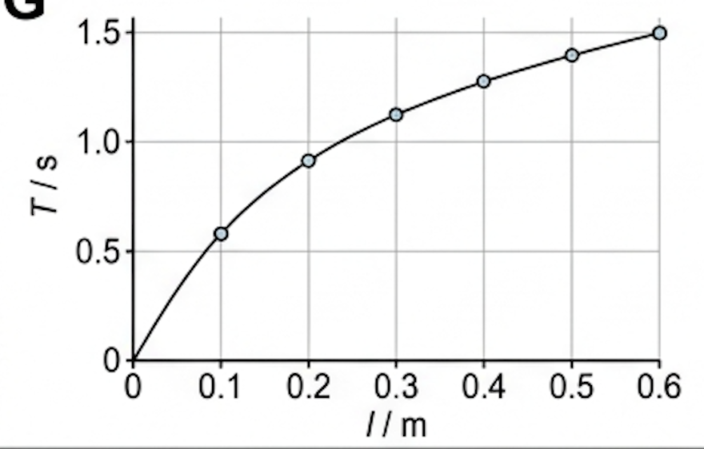
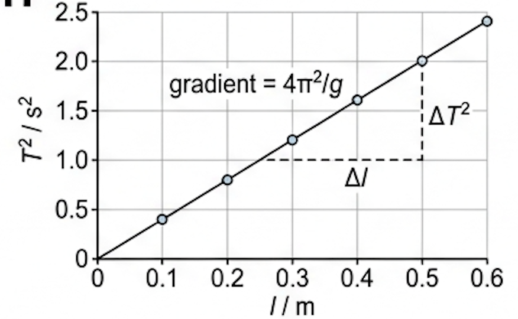
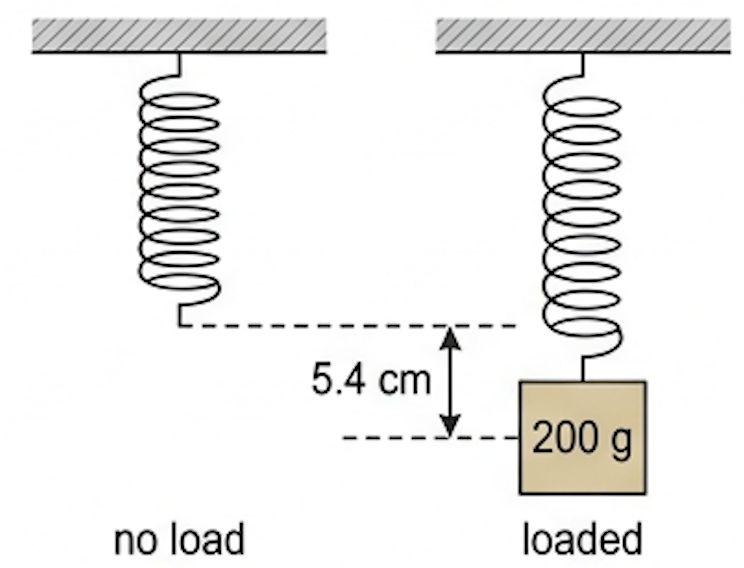

🎯 Hook – why these two, out of every oscillator there is?
A mass–spring system and a simple pendulum are important for a number of good reasons. These include: the proportional relationships between force and displacement are easily understood; their periods of oscillation have a convenient time for measurement in a school laboratory; they are good approximations to simple harmonic motion; energy is dissipated slowly, so that the oscillations continue for a long enough time that allows for accurate measurements to be completed; and they act as starting points for understanding many similar, but more complex, oscillators.

📐 The mass–spring system
We assume the spring is never overstretched and that it obeys Hooke's law:
In words: the size of the restoring force acting on the mass = spring constant × displacement from its equilibrium position. The spring constant is a measure of the spring's stiffness (= force / deformation).
The exact relationship for the SHM of a mass on a spring is:
Since \(\omega = \dfrac{2\pi}{T}\), this equation can also be written as:
Laboratory investigations of the time periods of a mass on a spring are straightforward, especially those involving using different masses on the same spring. Different springs, or combinations of springs, used with the same mass, can be used to investigate the effect of the spring constant, \(k\), on the period. Position sensors are useful in many aspects of the study of motion, including mechanical oscillations: digital data can be collected and processed later by the computer.


📏 Where the simple model runs out — the oscillating ruler
The equation \(T = 2\pi\sqrt{m/k}\) applies perfectly only to a point mass acted upon by a separate simple spring system that has a well-defined stiffness (\(k\)) and no (significant) mass. There is an extremely large number of other oscillating mechanical systems that have similarities to this simple model but are much more complex — for example, oscillations in buildings and bridges. A simpler example is one in which the mass is spread uniformly along the oscillating system: a ruler clamped at one end.

A student investigated an oscillating ruler, varying the mass of the ruler by taping various masses near to its free end. She predicted that the time period of the oscillator could be determined from the same equation as for a mass oscillating vertically on the end of a spring. Her raw data (assume that the uncertainties are low):
| Mass on end of blade / g | Time period / s |
|---|---|
| 0 | too quick to measure |
| 40 | 0.55 |
| 80 | 0.76 |
| 120 | 0.91 |
| 160 | 1.04 |
| 200 | 1.15 |
🕰️ The simple pendulum
There are many different designs of pendulum, all of which involve a mass swinging from side to side under the effects of gravity. We use the term simple pendulum to describe the simplest possible model of a pendulum: a spherical mass swinging on a rod, or string (both of which have negligible mass), from a rigid, frictionless support. The mass is often called a pendulum 'bob'.
Because the mass is spherical and the rod / string has negligible mass, all of the mass of the pendulum can be assumed to be acting as a point mass at the centre of the sphere. The displacement of the motion can be considered to be the angle between the rod / string and the vertical. The restoring force is provided by gravity.


The weight, \(mg\), of the pendulum is conveniently resolved into two perpendicular components: a force \(mg\sin\theta\) provides the restoring force bringing the pendulum back towards its equilibrium position; a force \(mg\cos\theta\) keeps the rod / string in tension.
An alternative way of looking at this situation: the pendulum has only two forces acting on it — tension in the rod / string, and weight, \(mg\). The resultant of these is the restoring force, \(mg\sin\theta\).
Practical laboratory investigations of a simple pendulum will confirm that, for small amplitudes, the time period, \(T\), depends only on its length, \(l\) (measured from its point of support to its centre of mass). Period is not affected by its mass. This is because doubling the mass, for example, will also result in doubling the restoring force.
The equation also shows that the period of a simple pendulum would change if its value was checked in a location where the gravitational field strength had a different value. Mount Nevado Huascarán in Peru is reported to have the lowest gravitational field strength on Earth; its summit (6768 m) is one of the farthest points on the surface of the Earth from Earth's centre. Research task: investigate the variations of the strength of the gravitational field around the Earth, then state and explain whether experiments in school laboratories would be able to measure those differences.
📈 Graphs every examiner uses
| Graph type | Axes (X, Y) | Shape | What to read |
|---|---|---|---|
| Spring, raw | mass \(m\) / g, period \(T\) / s | Curve of decreasing gradient from the origin | Not linear — cannot get \(k\) directly; linearize first |
| Spring, linearized | \(m\), \(T^2\) | Straight line through the origin | Gradient \(= 4\pi^2/k\), so \(k = 4\pi^2/\text{gradient}\) |
| Pendulum, raw | length \(l\) / m, period \(T\) / s | Curve of decreasing gradient from the origin | \(T\) rises with \(l\) but not proportionally |
| Pendulum, linearized | \(l\), \(T^2\) | Straight line through the origin | Gradient \(= 4\pi^2/g\), so \(g = 4\pi^2/\text{gradient}\) |


✍️ Worked example – spring constant from an extension (C1.2)
A 200 g mass was placed on the end of a long spring and increased its length by 5.4 cm. (a) Determine the spring constant, \(k\), of the spring. (b) If the mass is displaced a small distance from its equilibrium position and undergoes SHM, calculate the frequency of oscillations. (c) Suggest a possible reason why oscillations with greater amplitude may not be simple harmonic.
\(x = 5.4 \times 10^{-2}\ \text{m}\)
\(g = 9.8\ \text{N kg}^{-1}\)
\(0.200 \times 9.8 = -k \times (5.4\times10^{-2})\)
\(k = -36\ \text{N m}^{-1}\) — the negative sign shows that force and displacement are in opposite directions.
Equation (b): \(T = 2\pi\sqrt{m/k}\)
\(= 2\pi\sqrt{0.200/36} = 0.47\ \text{s}\)
\(f = 1/T = 1/0.47\)

🌍 Real-world: clocks, gravimeters and buildings
Because \(T = 2\pi\sqrt{l/g}\) contains \(g\) and not \(m\), a pendulum of fixed length is a gravity meter: measure \(T\), get \(g\). Mount Nevado Huascarán in Peru is reported to have the lowest gravitational field strength on Earth, its summit at 6768 m being one of the farthest points on the surface of the Earth from Earth's centre. The mass–spring model, meanwhile, is the starting point for oscillations in buildings and bridges, where the mass is spread through the structure rather than concentrated at a point.
🚀 HL Extension – from \(\omega^2 = k/m\) to the pendulum
SHM requires \(a = -\omega^2 x\). For the spring, \(F = -kx\) with \(F = ma\) gives \(\omega^2 = k/m\) directly. For the pendulum, the restoring force is \(mg\sin\theta\); using \(\sin\theta \approx \theta = x/l\) for small angles gives \(F \approx -(mg/l)x\), so the effective stiffness is \(mg/l\) and \(\omega^2 = g/l\).
Challenge: a pendulum has a period of 2.0 s on Earth. What is its period on the Moon, where \(g\) is one sixth of Earth's? (Answer: \(T \propto 1/\sqrt{g}\), so \(T = 2.0\sqrt{6} = 4.9\ \text{s}\).)
⚠️ Trap corner – common mistakes
| Misconception | Correct view |
|---|---|
| Heavier bob, slower swing | A heavier bob does not swing more slowly — period is not affected by its mass — doubling the mass also doubles the restoring force |
| Spring ignores mass too | A heavier mass on a spring does not have the same period: \(T = 2\pi\sqrt{m/k}\), so the period does depend on mass when the stiffness \(k\) is fixed |
| Gravity is in \(T\) for a spring | Even though the mass hangs vertically, the weight is constant, so it does not affect the results; the same system has the same period where \(g\) differs |
| Any pendulum amplitude gives SHM | Only for small amplitudes, where \(\sin\theta \approx \theta\) in rad, is the restoring force proportional to displacement |
| Curved graph, no relationship | A curved \(T\)–\(m\) or \(T\)–\(l\) graph does not disprove proportionality — linearize it: \(T^2\)–\(m\) and \(T^2\)–\(l\) are straight lines through the origin |
| Ruler = mass–spring system | The clamped ruler does not obey the mass–spring equation exactly: the blade's own mass is spread along the oscillator, so the simple point-mass model does not fit and the line misses the origin |
Complete the statements:
(a) Express this frequency in (i) megahertz, (ii) gigahertz. [2 marks]
(b) Calculate the time period of each cycle. [2 marks]
✓ (ii) \(3.2\ \text{GHz}\).
(b) ✓ \(T = 1/f = 1/(3.2\times10^{9})\)
✓ \(= 3.1\times10^{-10}\ \text{s}\) (0.31 ns).
(a) Determine the angular frequency of this oscillation. [2 marks]
(b) Suggest how you would expect the frequency and amplitude to change in the next few seconds. Explain your answer. [3 marks]
✓ \(= 1.2\times10^{3}\ \text{rad s}^{-1}\).
(b) ✓ The amplitude decreases, because the oscillation is damped — energy is transferred away from the string (as sound and to the instrument body). ✓ The frequency stays the same (196 Hz), so the note keeps its pitch. ✓ The frequency of damped oscillations does not change as the amplitude decreases.
(b) Determine the total angle (rad) through which it will rotate in 100 hours. [2 marks]
✓ \(\omega = 2\pi/T = 7.3\times10^{-5} \approx 7\times10^{-5}\ \text{rad s}^{-1}\).
(b) ✓ \(t = 100 \times 3600 = 3.6\times10^{5}\ \text{s}\)
✓ \(\theta = \omega t = 7.3\times10^{-5} \times 3.6\times10^{5} = 26\ \text{rad}\).
(b) Using slow-motion video replay, the angular frequency of the oscillations of a humming bird's wings was found to be 272 rad s⁻¹. Determine how many times it beat its wings in one minute. [2 marks]
✓ \(\omega = 2\pi f = 393\ \text{rad s}^{-1}\).
(b) ✓ \(f = \omega/2\pi = 272/(2\pi) = 43.3\ \text{Hz}\)
✓ Beats in one minute \(= 43.3 \times 60 = 2.6\times10^{3}\).
(a) Determine the spring constant, \(k\), of the spring. [2 marks]
(b) If the mass is displaced a small distance from its equilibrium position and undergoes SHM, calculate the frequency of oscillations. [3 marks]
(c) Suggest a possible reason why oscillations with greater amplitude may not be simple harmonic. [2 marks]
✓ \(k = -36\ \text{N m}^{-1}\); the negative sign shows that force and displacement are in opposite directions.
(b) ✓ \(T = 2\pi\sqrt{m/k} = 2\pi\sqrt{0.200/36}\)
✓ \(T = 0.47\ \text{s}\)
✓ \(f = 1/T = 2.1\ \text{Hz}\).
(c) ✓ The spring may become overstretched, ✓ so that Hooke's law is no longer applicable.
✓ Plot \(T^2\) against \(m\): the points lie on a good straight line, with a gradient of about \(6.4\times10^{-3}\ \text{s}^2\ \text{g}^{-1}\).
✓ So \(T^2\) is a linear function of the added mass, as \(T = 2\pi\sqrt{m/k}\) would suggest.
✓ But the line does not pass through the origin (positive intercept), and with no added mass the ruler still oscillates — too quickly to measure rather than not at all. The prediction was therefore not fully correct.
✓ Reason: the mass of the blade itself oscillates, so the effective mass is the added mass plus a share of the ruler's own mass; the ruler is not a point mass on a massless spring of well-defined \(k\).